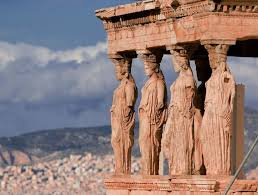

<!DOCTYPE html>
<html>
    <head>
        <title>Grčka</title>
        <link rel="stylesheet"href="grčka.css">
        <link rel="preconnect" href="https://fonts.googleapis.com">
        <link rel="preconnect" href="https://fonts.gstatic.com" crossorigin>
        <link href="https://fonts.googleapis.com/css2?family=Oswald:wght@200..700&display=swap" rel="stylesheet">

    </head>
</html>
<body>
    <h1 class="grčka"><center>GRČKA</center></h1>
    <br>
    <h2><center>Dobrodošli u Grčku – Zemlju Bogova, Mora i Tisućljetne Povijesti</center></h2>
    
    <p class="test1">Otkrijte čaroliju Egejskog i Jonskog mora, 
    <p class="test2">prošetajte drevnim hramovima i uronite u živahni ritam mediteranskog života. Grčka nudi spoj prekrasnih plaža, bogate kulture i nezaboravne gastronomije. Prepustite se krajolicima koji oduzimaju dah i tradiciji koja živi kroz svaki kamen, svaki zalazak sunca i svaki osmijeh domaćina.</p>
    <h2>Kultura</h2>
    <p class="test">Grčka kultura temelji se na bogatoj tradiciji, umjetnosti, filozofiji i gostoljubivosti. Od antičkih kazališta i mitologije do živopisnih lokalnih običaja, glazbe i plesa, Grci njeguju svoj identitet kroz žive tradicije i snažan osjećaj zajedništva.
    </p>
    <h2>Povijest</h2>
    <p class="box">Grčka je kolijevka zapadne civilizacije. Dom je velikih filozofa, prvih demokratskih ideja, poznatih vojskovođa i monumentalnih hramova poput Partenona. Svaki grad i otok čuvaju tragove tisućljetne povijesti — od antičkih vremena, preko bizantskog razdoblja, do suvremene države.</p>
    <h2>Turizam</h2>
    <p class="box2">Grčka je jedno od najpopularnijih turističkih odredišta na svijetu, poznata po tirkiznim plažama, slikovitim otocima, vrhunskoj gastronomiji i toploj klimi. Putnici ovdje pronalaze savršenu kombinaciju opuštanja, kulture i avanture — od obilaska arheoloških znamenitosti do uživanja u mediteranskoj kuhinji i prirodnim ljepotama.</p>
    <div>
        
    </div>
</body>